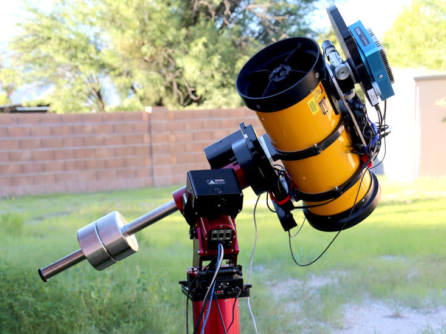

Projects
Things I am currently or have previously worked on
↓ jump to personal projects ↓
Characterizing the Brightness of LEO Satellite Constellations
Steward Observatory, University of Arizona, 2020-Present
The recent proliferation of LEO satellites is the beginning of a new space era, one with as many as a hundred thousand satellites in the sky. The initial sightings of new satellites by astronomers initiated concern regarding what impact the satellites will have on astronomy, both professional research astronomy and amateur sky gazing.
I began observing LEO satellites, in particular Starlink and OneWeb, in 2020 and with the resources available created the Pomenis LEO Satellite Photometric Survey. With over 14,000 observations of over 2,000 individual satellites this is the most comprehensive photometric and astrometric survey to date. I developed my own software to automate the survey and novel analysis methods including a new metric: the effective albedo which identifies where the satellites are brighter than they could be. I characterize the brightness of LEO satellites across the entire range of visible geometry, and in a way that is relevant to astronomers.
Read more...

High-Speed Photometric Characterization of Space Objects
Steward Observatory, University of Arizona, 2018-Present
Since 2018 I have completed over 100 nights of observing time on the Kuiper 61 inch telescope with Chimera, our high-speed photometer. With this observing time I have created a large catalog of light curves of satellites, rocket bodies, and space debris.
High-speed photometry, and the resulting light curves have significant untapped utility for characterizing space objects. From the light curve alone, we can often identify the object type. Through comparison of light curves I positivley identified near-Earth object 2020 SO as a Centaur D rocket body. Understanding the light curve and reflection characteristics also provide vital supporting information for interpreting other rotationally averaged observations, such as the spectra of HS-376 satellites which the light curves reveal are dominated by specular reflections from the antenna reflector and not the expected diffuse light from the solar cells.
Read more...
Near-IR Characterization of Space Objects
Steward Observatory, University of Arizona, 2020-Present
Using the UKIRT telescope on Mauna Kea we have observed a multitude of satellites, rocket bodies and space debris to develop methodologies and test the efficacy of using color features to characterize space objects. Using the Wide-Field CAMera (WFCAM) we have created a photometric catalog of objects. Further spectroscopic follow-up observations utilize the UIST and Michelle spectrometers.
Existing processing software did not accomodate the peculiarities of satellite observing so I created
I created the custom automated software pipeline for processing the images and producing photometric measurements
One ensemble of objects we study is the HS-376 satellite bus. The HS-376 was a common communications satellite bus, notable for its spin-stabilized cylindrical body which is almost completely covered in solar cells. Launched from 1978 to 2003, there are a total of 58 HS-376 satellites which utilized various types solar cells including silicon-based and GaAs-based. Through photometric and spectroscopic observations we are able to differentiate between the silicon-based and GaAs solar cell models.
Read more...

Deep-Space & Cislunar Tracking
Steward Observatory, University of Arizona, 2018-Present
When the opportunity arises I utilize Pomenis and Chimera on the Kuiper 61 inch telescope to track distant satellites and debris beyond GEO orbit. In particular I've tracked many long-period satellites such as Integral, TESS, and Chandra, and some lunar missions during their trans-lunar traverse including Chang'e 5 and Chandrayaan-2. Tracking distant objects like these is an exercise in observing methodology, acquisition, and detection limits. The bright background sky created by the Moon is a unusual challenge that cannot simply be overcome with longer exposures or more senstivie instruments. Read more...
Chimera
Steward Observatory, University of Arizona, 2017-Present
The Steward Observatory SSA team created Chimera to operate regularly on the Kuiper 61 inch telescope. Chimera is a high-speed photometer with simultaneous three-color photometry in the Sloan r’ (562-695 nm), i’ (695-844 nm), and z’ (826-920 nm) bands. The optical design produces well-corrected fields of view of 9.7 x 9.7 arcmin in the z’ band and 6.0 x 6.0 arcmin in r’ and i’ bands. The relativley large field of view (compared to similar instruments) facilitates acquisition and tracking of moving satellites and allows for a variety of photometric calibration methods. The relatively simple optical design uses a wide-field collimator, two dichroic beam splitters, and three re-imaging lens assemblies. Chimera utilizes three Princeton Instruments Pro-EM HS cameras, which record images at rates up to 61 fps in full-frame full-resolution mode. Rates up to 1000 fps are possible by cropping and or binning the detector. Read more...

Pomenis
Steward Observatory, University of Arizona, 2017-Present
The Steward Observatory SSA team created the Pomenis Astrograph System as a novel low-cost large field of view SSA sensor. The astrograph has an exceptionally large 4° x 4° field of view and a fast readout CCD camera. These features enable unique observations not otherwise possible, such as tracking of objects with poorly known ephemeris and observation of fast moving LEO satellites. We carefully selected the aperture and focal length to achieve sensitivity relevant to SSA with an integration time short enough to allow rapid survey of large areas. With its 7-color filter wheel, Pomenis can perform multi-color photometric screening of deep space satellites looking for anomalous behavior and can identify objects for higher fidelity measurements and study. Pomenis is housed in a unique trailer mounted enclosure, which enables the system to be deployed with minimal infrastructure, operated remotely and autonomously, and quickly relocated as required. Read more...

The Dog House Mobile Observatory
Steward Observatory, University of Arizona, 2017-2018
The Steward Observatory SSA team created the Dog House Mobile Observatory Enclosure to house Pomenis, our SSA-dedicated telescope system. The novel trailer-based mobile enclosure allows us to relocate Pomenis for specific scientific missions such as night sky brightness surveys and observing limited visibilty objects.
I designed and managed the creation of the Dog House, including doing most of the fabrication myself. The Dog House is built on top of a unique drop-deck Air-tow brand trailer. When parked, the entire bed of the trailer is lowered via a hydraulic lifter until the weight rests on the ground and not on the wheels. This produces a stable enclosure without use of outrigger jacks. The roof is a modified version of the Aqawan enclosure and conists of two clamshell halves which open with a compoung sliding and rotating motion. The geometry is specificlaly desgined to clear the wheels of the trailer and provide the lowest sky horizon obstruction. Uniquely, the roof is stable under gravity in both the open and closed position without the use of counter-weights.
Read more...
The design of the mobile enclosure is patent pending (US63/107,203) and available for licensing.
Electro-Optical Sensor Performance Model
Steward Observatory, University of Arizona, 2018
I created a software program to model the end-to-end performance of a user-definable electro-optical system and scenario. The model simulates the propogation of sunlight reflected off the target object and captured by the sensor, and computes the resulting fluxes and final SNR. The model integrates the flux over arbitrary spectral curves defined for each interface the light reflects from or passes through. Through a suite of parameters the user specifics the sensor characteristics (e.g. read noise, pixel size, QE ...) the optical specification (e.g. aperture, focal length, filter ...) and the relevant target object size and distance. The model also includes configurable atmospheric transmission and sky background.
EUSO-SPB1
Colorado School of Mines, 2016-2017
As a pathfinder mission of the Extreme Universe Space Observatory (EUSO) collaboration, a 1 m size telescope flew on a NASA Super Pressure Balloon in 2017. The primary science goal of EUSO-SPB1 was to make the first ever observations of high-energy cosmic ray extensive air showers by looking down at the atmosphere. The telescope consisted of two 1 m x 1 m square acrylic fresnel lenses which provided an approximately 11° x 11° field of view on a 48 x 48 high-speed photomultiplier tube based detector. The Colorado School of Mines High-Energy Astroparticle research team completed final integration and testing of the instrument before shipping it to Wanaka, NZ for flight preparations and launch. The balloon carrying EUSO-SPB1 launched on April 24, 2017 from Wanaka Airport. Unfortunately the balloon sprung a leak and the mission terminated only 12 days into the planned 100 day flight. The payload sunk in the Pacific ocean. A new follow-up mission, EUSO-SPB2, is scheduled to fly in 2023.
EUSO-GLS Prototype
Colorado School of Mines, 2013-2017
The Global Light System (GLS) is a planned network of 12 ground stations which will use Xenon flash lamps and steered UV lasers to create test light sources for calibration of the future Extreme Universe Space Observatory (EUSO) detector on board the International Space Station. The Colorado School of Mines High-Energy Astroparticle research team built a mobile prototype GLS station. The prototype is built into a trailer to allow mobility to and from campus and nearby cosmic ray detectors in Utah (EUSO-TA) and eastern Colorado (AMT). The system includes a high-power UV pulsed laser mounted on an optical table inside the trailer and is equipped with a two-axis steering head which is raised through a sliding-hatch opening in the roof of the trailer. For stability, when deployed the optical table and laser system are decoupled from the chassis of the trailer and are separately supported by a set of outrigger jacks.

Auto-Grader Website
Colorado School of Mines, 2016
A further evolution of Dr. Christopher Painter-Wakefield's homework code testing system, the Auto-Grader website allows students to login and complete small coding assignments online. The website includes a built-in text editor for writing code and an automated testing script. After expiration of a given assignment the students' progress and grades are automatically calculated and prepared for export via the admin login.

Personal Projects
An assortment of things I'm not embarassed to share
Floating Island Cabinet
2022
I made this floating island cabinet as a wedding gift for two friends. It is mostly made from walnut with some maple and mahogany.
Drill Press Vise Mount
2022
Workholding is one the most important tools of making and one that is often overlooked. A mill will have a solidly bolted vise to hold the work and an XYZ table and to move it around. The humble drill press is rarely so well equipped but a good vise is still vital to cutting clean holes with a drill press. However, the big advantage of the drill press is the ability to quickly line up and drill holes without establishing a full workholding setup.
My solution to this conundrum is to attach a rod to the side of the vise which subsequently fits into a pivoting anchor bolted to one corner of the table. The vise can be easily moved around the table and locked down with a simple turn of the handle. Then when drilling the off-hand further holds down the vise.
This concept is copied from the Heinrich Safety Vise and a seemingly unavailable Ellis Vise.
1973 Porsche 914 Restoration
2019-2022
I assisted my father with a complete restoration of his new-to-him 1973 Porsche 914. After tearing down the car to the bare chassis we discovered much more rust and poorly done body repairs than we expected. This led to replacing multiple body panels and sections of chassis for which I did much of the welding.
My father has documented the entire process in a build thread at 914World.

RGB Nalgene Lantern
2020
Unsatisifed with available camping lanterns I decided to make my own. The lantern is built into a basic 32 oz Nalgene bottle which is itself water proof and durable. Inside is an array of both warm white and RGB LED strips. Power is provided by four 18650 batteries and charged via USB C integrated into the lid. Everything is controlled via an Arduino and ten position knob mounted on the lid. I wanted an easy to use interface to change light modes without complicated multiple button press sequences.
Maple Table
2018-2019
With assistance from a friend I made this table as a wedding gift to the couple who usually hosts board game nights.
Dall-Kirkham Mirror Set
2018
Made by hand under the guidance of University of Arizona Optics Professor Jose Sasian as part of a one semester class on optical fabrication. I still need to build a telescope to house the optics.
8 inch f/7 "Planet Killer" Telescope
2016-2017
During my last year at Mines, I took advantage of my access to the machine shop to build my own telescope. I purchased a vintage primary mirror and machined a mirror cell to hold it. I also machined the secondary holder and spider and installed everything into a giant aluminum tube.
1974 Datsun 260Z Racecar
2013-2016
I and several other guys of the Colorado School of Mines Racing Club bought a trashed Datsun 260Z and built it into a racecar. It was nothing special though we did all the work ourselves including welding the roll cage. We raced the car in 2014 at a 24 Hours of Lemons event where we blew the engine in the first hour. After rebuilding the engine we raced again in 2016 at a ChumpCar event.
Laser Star Pointer
2015
I and a friend built and coded this for our final project for our Digital Electronics class. It is a simple altitude-azimuth turret which points a laser pointer at various stars in the sky. Unfortunatley it didn't work correctly because (as I discovered one night before the deadline) 8-bit precision is not enough for the calcuations to determine star positions.
Homemade Lightbulb
2014
I enjoy seeing complex untouchable things transformed into simple concepts which can be replicated at home. And there is no better example than the humble light bulb. As a fun afternoon project I decided to make a homemade light bulb out of a mason jar and graphite pencil lead for filament. I purged the jar of oxygen and filled it with canister CO2.
The guide I wrote on Instructables.com has accumulated over 500,000 views.
The Spark Hektor SRX9000 Prototype
2014
I and 4 other students (Team Spark) made this robot for the EPICS I class at Mines. The instructors assigned us to create a toy to inspire young interest in STEM. As part of the class we followed a formal development process including writing and presenting concept ideas, business plans, progress reports, and a final protoype to the "clients" who were our instructors.
Our product, which we called the Hektor SRX9000, is a simple four wheeled rover with a very unique control mechanism. The rover is controlled with a wireless stylus, which is really just a repackaged wireless USB mouse. The idea being that the user would use the stylus to trace a path on a piece of paper and the rover would mimic the same path on the floor.
Macintosh SE Restoration
2013-2014
In the fall, when walking through a light snow flurry I spotted this recognizable beige box abandoned on the curb. I've always had an affinity for retro hardware and computers, so I had to pick it up and carry it back to my dorm room. I proceeded to do a complete tear down, cleaning, repair, and restoration to working order, all in the confines of my dorm room.
CARL the Robot Arm
2011-2013
I built this robotic arm, named CARL, in high school to compete in the Science Olympiad Robot Arm event. With over two years of development, I really learned the prototyping and iterative development process. The very first version utilized almost all pre-made kit parts, and as I worked to address each challenge I replaced more parts with solutions I designed and fabricated myself.
The arm itself is a classic 5 DOF articulated design. In hindsight, this is not the best design for the task as stability and strength were often a challenge. Each joint includes an analog servo motor driven by a BASIC Stamp microcontroller. The entire arm is controlled via an intuitive master/slave system. The operator manipulates a smaller model of the arm which the robot then matches.
With CARL, I placed 1st at the 2012, and 2nd at the 2013 Texas Science Olympiad tournaments.
geoff the Sumo Robot
2010-2011
I built geoff in high school to compete in the Science Olympiad Sumot Bots event. geoff's evolution includes many many different versions. Unlike all other Science Olympiad build events which feature a defined challenge and scoring system, Sumo Bots was a direct head-to-head tourney and a much more dynamic and interesting engineering challenge.
Inescapable during the evolution of geoff was the 2 kg weight limit. Every new part required reassessing the entire design to find somewhere to reduce weight and allow for the new addition. Excepting the motors, gear boxes, and RC control system, I designed and fabricated every component to be light and durable. The curved side bumpers allow geoff to turn against an opponent when hit on the side and are raised on flexible supports to inhibit the ability for opponent's wedges to lift geoff's wheels off the ground. The wheels are custom hubs with very soft foam rubber tires to maximize surface contact and grip. The front and rear wedges are spring loaded to keep the aluminum edge in contact with the ground.
With geoff, I placed 2nd at the 2011 Texas Science Olympiad tournament.
Robo-Cross
2008
I built this robot in middle school to compete in the Science Olympiad Robo-Cross event. With this robot I placed 13th at the 2008 Texas Science Olympiad tournament.